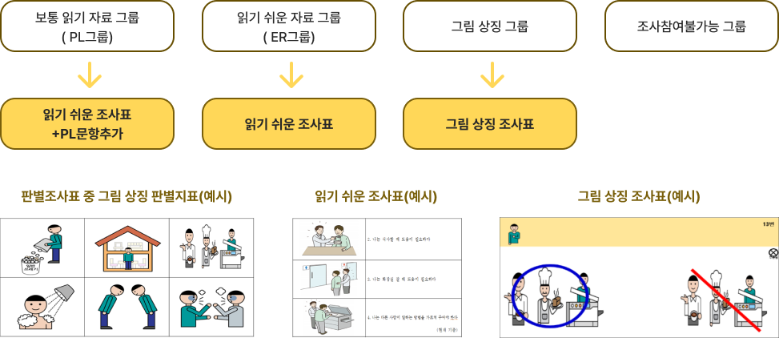

발달장애인의 일과 삶
 홈
홈- 장애인고용 통계조사 소개
- 발달장애인의 일과 삶
발달장애인의 일과 삶
조사목적
발달장애인의 생활 및 취업실태, 서비스 욕구의 파악
※ 대리응답이 아닌 발달장애인 당사자와 보호자의 의견을 구분하여 파악
조사대상
만 15세 이상 발달장애인이 1명 이상 포함된 가구의 발달장애인 당사자 및 보호자
※ 발달장애인 당사자는 조사참여 가능수준 판별 결과에 따라 조사 참여가 불가능한 사람은 제외
조사내용
조사방법
태블릿 PC를 활용한 가구방문 면접조
발달장애인 당사자를 조사참여 가능 수준에 따라 네 그룹으로 구분하고, 각 수준별 특수조사표로 조사
발달장애인 당사자를 조사참여 가능 수준에 따라 네 그룹으로 구분하고, 각 수준별 특수조사표로 조사

조사주기 및
공표시점
조사주기 : 1년
기준시점 : 6월 15일
조사기간 : 6월～9월
공표시기 : 익년 5월
기준시점 : 6월 15일
조사기간 : 6월～9월
공표시기 : 익년 5월
조사활용
발달장애인만의 고유 특성, 당사자와 보호자의 개별적 욕구 등을 도출하여
맞춤형 고용·복지서비스 설계 및 관련 연구 수행에 활용
맞춤형 고용·복지서비스 설계 및 관련 연구 수행에 활용
발달장애인 일과 삶 실태조사 주요 특징
-
발달장애인용 특수조사표
개발‧활용을 통한 통계 정확도 제고 -
발달장애인 당사자와 보호자를 연계하여 조사
* 서로의 생각과 의견을 비교 가능 -
발달장애인 당사자 직접 참여를 통한 조사표 및 조사방법론 개발
-
알기 쉬운 조사결과 인포그래픽 제작
* 조사종료 후 참여자에게 제공함으로써 지속적인 신뢰관계 구축